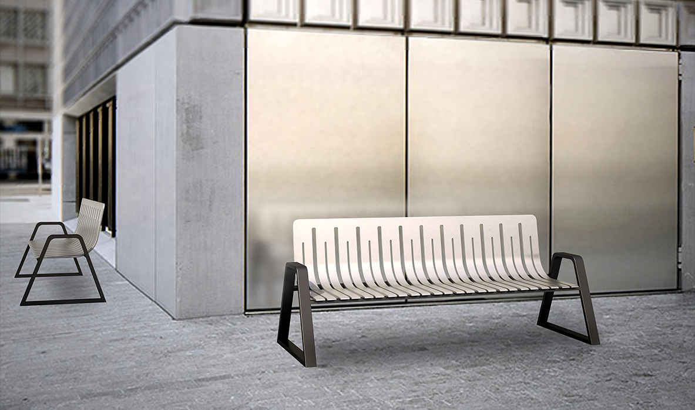
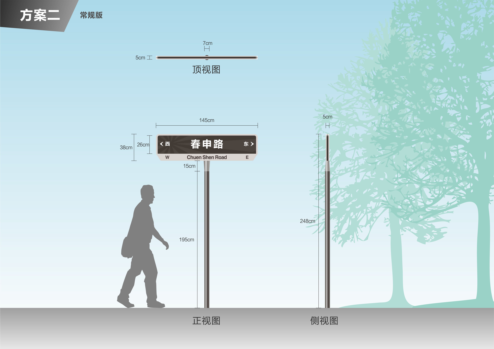
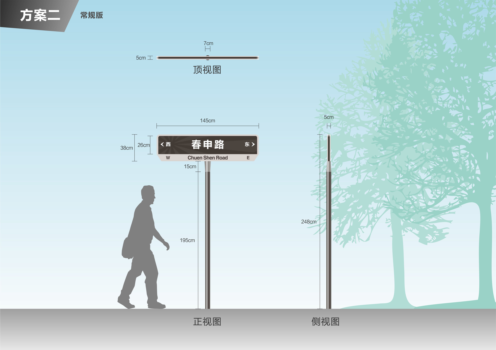

苏州相城高新技术开发区形象提升
Suzhou Xiangcheng Development Zone Image promotion
苏州市相城高新开发区
项目面积：2.3平方公里
设计时间：2016年
2016年5月，以黄埭镇潘阳工业园为核心区的相城高新 技术产业开发区获省政府批准。 黄埭镇位于姑苏城西北约10 公里。相城高新区核心区规划面积2.3平方公里，按照“一区 多园”的空间布局，相城高新区将加快推进潘阳工业园、生物 科技园、春申国际科创 园和智能制造产业园四大高新功能园 区建设。
 

 返回顶部
返回顶部